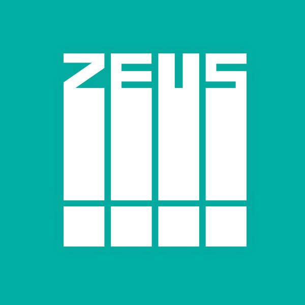

贊助 Donate 救救窮打字員 由於，因為系統架設在 Firebase 平台上，在資料庫流量上會是一筆大開銷，所以必須仰賴所以大大們，看能否多多少少贊助一下吧：） 然後，PayPal 的 贊助 Donate 已經申請了，目前只能先提供帳戶給大家支援我，想要出現在下方的話，真的贊助了可以 Facebook 私訊我，我會幫上廣告 😊 帳號：007(第一銀行) 2186 8082 407  宙思設計 巷弄 AmazingTalker 北港阿杏湯包